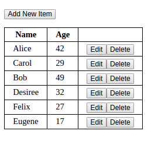
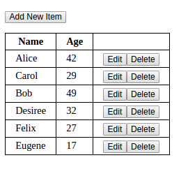

Your form might look something like this:

Create a Web app like the one for the Object List and Local Storage assignments with a table for the items and a form for creating and editing them. The only difference is that you will also use the REST API to store the data, reading from it at start-up and saving to it whenever data changes.
The URL for your collection will be
https://pacific-meadow-64112.herokuapp.com/data-api/(your name)
where (your name) stands for your first initial plus your last name.
The table might look like this:

Your form might look something like this:
Use Canvas to submit the URL to your Web page.